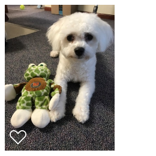
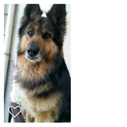

[8/19/2019] I am starting as an assistant professor in computer science at University of Colorado, Colorado Springs!
[2/22/2019] I passed my Ph.D thesis defense!
Shuai Li
assistant professor
in Computer Science
at University of Colorado, Colorado Springs (UCCS)
Email: sli at uccs.edu
Education: I obtained my Ph.D. from University of Minneosta after 7 grateful years working with my advisor Nick Hopper
CS 2160, Computer Organization and Assembly Language Programming, UCCS, 2020 Spring, 2020 Fall
CS 4200, Computer Architecture, UCCS, 2020 Spring
CSCI 2021, Machine Architecture and Organization, University of Minnesota, 2013 Spring, 2014 Spring
CSCI 2011, Discrete Structures of Computer Science, University of Minnesota, 2014 Spring
Information Leakage Measurement and Prevention in Anonymous Traffic
Shuai Li,
Ph.D. dissertation, University of Minnesota, June 2019
Measuring Information Leakage in Website Fingerprinting Attacks and Defenses
Fingerprinting Keywords in Search Queries over Tor
Demographics Inference Through Wi-Fi Network Traffic Analysis
Mailet: Instant Social Networking under Censorship
Facet: Streaming over Videoconferencing for Censorship Circumvention
YouSense: Miitigating Entropy Selfishness in Distributed Collaborative Spectrum Sensing
Location Privacy Preservation in Collaborative Spectrum Sensing
Towards A Game Theoretical Modeling of Rational Collaborative Spectrum Sensing in Cognitive Radio Network
Security and Privacy of Collaborative Spectrum Sensing in Cognitive Radio Networks
Believe Yourself: A User-centric Misbehavior Detection Scheme for Secure Collaborative Spectrum Sensing
Shuai Li,
Huajun Guo,
and Nicholas Hopper
CCS 2018
[Repo]
Se Eun Oh,
Shuai Li,
and Nicholas Hopper
PETS 2017
Huaxin Li,
Zheyu Xu,
Haojin Zhu,
Di Ma,
Shuai Li,
and Kai Xing
INFOCOM 2016
Shuai Li,
and Nicholas Hopper
PETS 2016
[Repo]
Shuai Li,
Mike Schliep,
and Nicholas Hopper
WPES 2014
[Repo]
Shuai Li,
Haojin Zhu,
Zhaoyu Gao,
Xinping Guan,
and Kai Xing
INFOCOM 2013
Shuai Li,
Haojin Zhu,
Zhaoyu Gao,
Xinping Guan,
Kai Xing,
and Xuemin (Sherman) Shen
INFOCOM 2012
Shuai Li,
Haojin Zhu,
Bo Yang,
Cailian Chen,
Xinping Guan,
and Xiaodong Lin
IEEE ICC 2012
Zhaoyu Gao,
Haojin Zhu,
Shuai Li,
Suguo Du,
and Xu Li
IEEE Wireless Communications
Shuai Li,
Haojin Zhu,
Bo Yang,
Cailian Chen,
and Xinping Guan
IEEE ICC 2011
at Minnesota State Fair
Juan Juan (Curly Curly)
Heihu (Black Tiger)
My wife and me live with our 3 year old Juan Juan in Colorado. Juan Juan loves people's attention and always say Hi to everyone. Heihu is my wife's first dog, who welcomed me very hard when I first visited my wife's family.